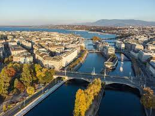
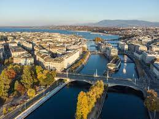

Travel
Paris, France

Embark on an enchanting journey to Paris, the City of Light, where every cobblestone street whispers tales of romance, art, and timeless elegance. From the iconic silhouette of the Eiffel Tower to the charming allure of Montmartre's winding alleys, Paris beckons with its unparalleled blend of history, culture, and culinary delights. Imagine strolling along the Seine River, with its graceful bridges and riverside cafes, as the sun sets behind the Notre-Dame Cathedral, casting a golden glow upon the city. Paris is not just a destination; it's an immersive experience that captivates the senses and invites you to savor the art, history, and gastronomy that define this captivating metropolis. Paris is a city that seamlessly weaves together the past and the present, inviting you to savor its timeless beauty and cultural richness. Each corner holds a new discovery, whether it's a hidden boulangerie, a charming bookshop along the Seine, or the vibrant ambiance of a street-side café. Embrace the allure of Paris, where every moment is a celebration of art, romance, and the joy of simply being in this extraordinary city.
Photo Gallery

Must-see Sites
Eiffel Tower

A symbol of Paris and an architectural masterpiece, the Eiffel Tower offers breathtaking panoramic views of the city. Whether you ascend to its summit or enjoy a picnic in the Champ de Mars below, the Eiffel Tower is an essential stop.
Louvre Museum
Home to thousands of works of art, including the renowned Mona Lisa and the Venus de Milo, the Louvre is a treasure trove for art enthusiasts. Wander through its grand halls and marvel at the diverse collection spanning centuries and civilizations.
Montmartre and Sacre-Coeur
Explore the bohemian charm of Montmartre, where narrow streets lead to the dazzling white-domed Basilica of the Sacré-Cœur. The climb to the top rewards you with stunning views of Paris, creating a magical experience.
Notre-Dame Cathedral
A masterpiece of French Gothic architecture, Notre-Dame Cathedral has witnessed centuries of history. Admire its intricate facade, awe-inspiring interiors, and the view from its towers that overlook the Seine and the city beyond.
London, England
London is a city that needs no introduction. From the iconic silhouette of Big Ben to the majestic dome of St. Paul's Cathedral, London's landmarks are instantly recognizable. Yet, this vibrant metropolis is more than just a collection of famous sites; it's a city that invites you to explore its rich history, diverse culture, and dynamic culinary scene. Whether you're strolling through the lush gardens of Hyde Park or enjoying a pint at a local pub, London is a city that offers something for everyone.
Photo Gallery

Must-see Sites
Big Ben
One of London's most iconic landmarks, Big Ben is a must-see. Whether you're admiring its grand facade or listening to its famous chimes, Big Ben is a symbol of London and a testament to the city's rich history.
Westminster Abbey
Westminster Abbey is a masterpiece of Gothic architecture and a UNESCO World Heritage Site. From the coronation of kings and queens to royal weddings, this historic church has witnessed centuries of history.
Tower of London
Explore the Tower of London, a historic castle that has served as a royal residence, a prison, and a fortress. Discover the Crown Jewels, learn about the Tower's history, and see the famous ravens that call the Tower home.
London Eye

Take a ride on the London Eye, a giant Ferris wheel that offers breathtaking views of the city. Whether you're enjoying a romantic sunset or admiring the city lights at night, the London Eye is a memorable experience.
Geneva, Switzerland

Geneva is a city that embodies the best of Switzerland. From the majestic Alps to the tranquil shores of Lake Geneva, this cosmopolitan city is a feast for the senses. Whether you're strolling through the Old Town or admiring the Jet d'Eau, Geneva is a city that invites you to explore its rich history, diverse culture, and dynamic culinary scene.
Photo Gallery
 

Must-see Sites
Jet d'Eau
The Jet d'eau, a mesmerizing landmark in Geneva, Switzerland, is a testament to the city's elegant charm. Soaring gracefully on the shores of Lake Geneva, this iconic water fountain reaches heights of up to 140 meters, creating a dazzling spectacle that captivates both locals and visitors alike. The Jet d'eau's ethereal plume, set against the picturesque backdrop of the lake and the Alps, embodies the essence of Geneva's beauty and adds a touch of whimsical grace to the city's skyline.
Old Town
Geneva's Old Town, a captivating labyrinth of narrow cobblestone streets and medieval architecture, transports visitors to a bygone era. Nestled on a hill overlooking Lake Geneva, this historic quarter is a tapestry of charming squares, centuries-old buildings, and hidden gems waiting to be discovered. As you meander through the winding alleys, the St. Peter's Cathedral with its iconic towers and the Maison Tavel, Geneva's oldest house, stand as silent witnesses to the city's rich cultural heritage, offering a delightful journey through time in the heart of Switzerland.
Palais des Nations
The Palais des Nations, located in Geneva, Switzerland, is a stately symbol of diplomacy and international cooperation. Formerly the League of Nations headquarters and now the European headquarters of the United Nations, this grand edifice stands on the shores of Lake Geneva amidst lush parkland. With its impressive Assembly Hall, exquisite chambers, and expansive gardens, the Palais des Nations exudes an aura of global significance, serving as a meeting place for world leaders and a beacon of unity in the heart of Switzerland.
St. Pierre Cathedral
St. Pierre Cathedral, nestled in the heart of Geneva, Switzerland, stands as a majestic testament to centuries of architectural and religious significance. This Gothic marvel, with its imposing spires and intricate facade, commands attention against the backdrop of the cityscape. Visitors are invited to explore the serene interiors, adorned with stunning stained glass windows and a serene atmosphere that invites reflection. The panoramic views from the cathedral's towers provide a breathtaking panorama of Geneva and the surrounding Alps, adding an extra layer of awe to the allure of this architectural gem.